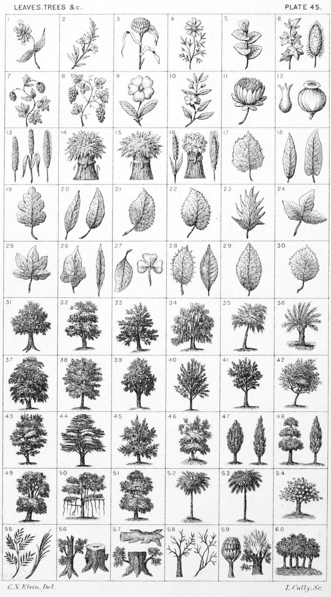

Plate 45.

Plate 45.
- Honeysuckle, or Woodbine
- Rosemary
- Garlic
- Camomile
- Barberry
- Ivy ; and a Teazel or Teasel
- Hop-Plant
- Vine-Branch
- Primrose stalked and leaved
- Myrtle branch with flower and buds
- Lotus flower
- A clove; and Poppy-bole
- Wheat Ear; Wheat stalk-bladed ;
and a Barley ear
- Garb, or Wheat-Sheaf
- Garb of Barley
- Bladed ear of Wheat; a Garb of
Quaterfoils ; and an Ear of Rye
Hazel-leaf
- Laurel ; and Dock-leaf
- Oak leaf
- Bay leaf; and Portugal-laurel
- Elm leaf
- Mulberry leaf
- Holly leaf
- Maple leaf
- Fig leaf
- Burdock ; and Betony leaf
- Woodbine leaf pendant ; and Clover
- Nettle ; and Walnut leaf
- Rose leaf
- Aspen leaf
- Oak Tree fructed, and eradicated
- Ash
- Beech
- Birch
- Willow, or Salix
- Pollard Willow
- Linden, or Lime
- Walnut
- Pear Tree fructed
- Cherry
- Almond
- Thorn
- Hawthorn
- Cedar
- Alder
- Asp
- Yew ; and Poplar
- Box ; and Cypress
- Mahogany
- Banyan
- Elm
- Date-Palm Tree
- Cocoa-Tree, anciently Coker-Tree
- Cotton Tree (as engraved in Burke's
Heraldic Illustrations)
- Branch of Southernwood ; and
Palm-Branch
- Stem of a Tree erased and sprouting. A stock of a Tree snagged,
and erased
- Stock of a Tree Jacent, eradicated ;
Stem of a Tree couped, eradicated
and sprouting
- A starved, or Blighted tree couped,
A starved, or Blighted branch.
See Scrogs
- A Savin Tree. (From Burke's
Heraldic Illustrations). A Burning
Bush
- Oak Trees on a Mount, also blazoned
a Hurst, or Wood